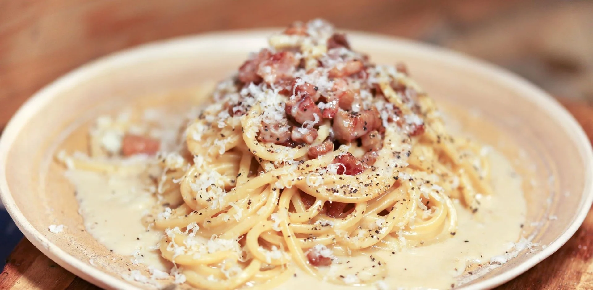

Foods
Here are our top picks for delicious and easy-to-make dishes.

Creamy Carbonara
There may be no more beloved Italian dish than carbonara: hot pasta tossed with a creamy sauce of raw beaten eggs, accentuated with crisp bits of guanciale, and finished with a shower of grated aged Pecorino Romano cheese plus freshly ground black pepper.

Homemade Margherita Pizza
Pizza margherita, as the Italians call it, is a simple pizza hailing from Naples. When done right, margherita pizza features a bubbly crust, crushed San Marzano tomato sauce, fresh mozzarella and basil, a drizzle of olive oil, and a sprinkle of salt. That is all.

Delicious Fried chicken
Fried chicken has been described as being "crunchy" and "juicy", as well as "crispy". The dish has also been called "spicy" and "salty". Occasionally, fried chicken is also topped with chili like paprika, or hot sauce to give it a spicy taste.

Lasagna
Lasagna is a classic Italian dish of pasta sheets alternating with fillings, such as cheese, ragù, and besciamella, and baked. The word "lasagna" can also refer to the type of wide, flat pasta sheet used to make the dish. Lasagna recipes have been around since the 13th century, and today there are many varieties, including cream sauces, veggies, and traditional recipes.

Filipino Spaghetti
Filipino spaghetti, also known as sweet spaghetti, is a sweet, meaty, and rich pasta dish that's a Filipino adaptation of Italian spaghetti with Bolognese sauce. It's often served at special occasions, especially children's birthdays, and is considered a comfort food in Philippine cuisine.

French fries
French fries, also known as chips, finger chips, or french-fried potatoes, are a side dish or snack made from deep-fried potato strips. They are typically cut into thin strips, washed, dried, and then deep-fried in vegetable oil until golden brown. French fries are often salted and served with ketchup, mayonnaise, or vinegar.